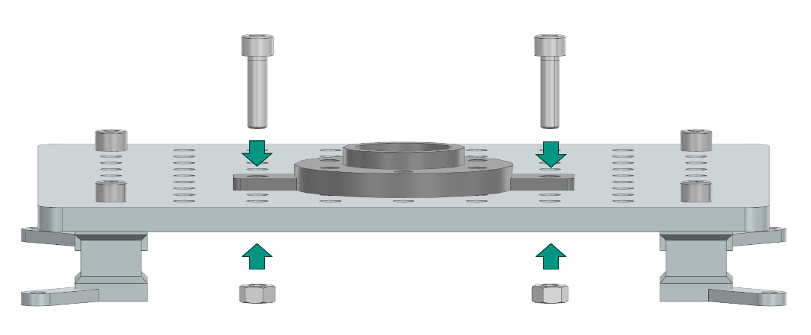

Assembly Instructions: Pick and Place
This section describes the assembly instructions for the Pick and Place task module of the industrial assembly challenge taskboard. The module consists of three tasks: Housing Parts, Feather Key, and Shim Ring placement.

Task 1: Housing Parts
Step 1: Prepare the Components
3D-printed parts |
Purchased components |
|---|---|
Housing Part1 x 1 (Material: PETG) |
M8 Nut x 2 |
Housing Part2 x 1 (Material: PETG) |
30mm M8 Screw x 2 |
Step 2: Manual Fixation of the Housing Part1 on the Taskboard
Align the two side holes of the Housing Part 1 component with any two suitable holes on the Taskboard. Then push two 30mm M8 screws through the aligned holes and secure them from the bottom of the Taskboard with M8 nuts.
{kind=link}
Place the Housing Part 2 on a flat surface next to the Taskboard, so that the Robot can grasp it.
Task 2: Feather Key
Step 1: Prepare the Components
3D-printed parts |
Purchased components |
|---|---|
Feather Key Assembly x 1 (Material: PETG) |
M8 Nut x 2 |
Feather key x 1 (Material: PETG) |
30mm M8 Screw x 2 |
Step 2: Manual Fixation of the Feather Key Assembly on the Taskboard
Align the two side holes of the Feather Key Assembly component with any two suitable holes on the Taskboard. Then push two 30mm M8 screws through the aligned holes and secure them with M8 nuts. Place the Feather Key on a flat surface next to the Taskboard.
Task 3: Shim Ring
Step 1: Prepare the Components
3D-printed parts |
Purchased components |
|---|---|
Shim Ring Assembly x 1 (Material: PETG) |
M8 Nut x 2 |
Shim Ring Magazine x 1 (Material: PETG) |
30mm M8 Screw x 2 |
Shim Ring x 5 |
Step 2: Manual Assembly of the Shim Ring Task
Align the two side holes of the Shim Ring Assembly component with any two suitable holes on the Taskboard. Then push two 30mm M8 screws through the aligned holes and secure them with M8 nuts.

Place the Shim Ring Magazine next to the Taskboard and place a shim ring in each of the 5 magazine slits as shown in Figure 2.